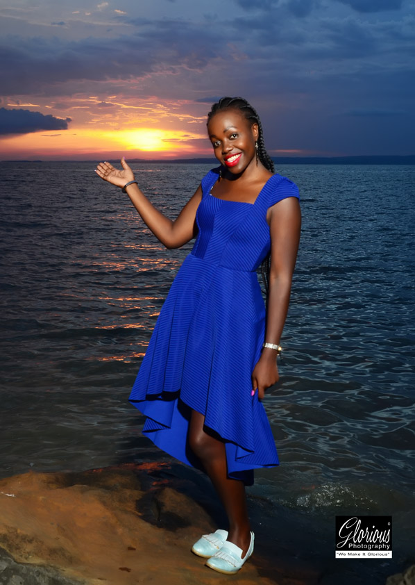
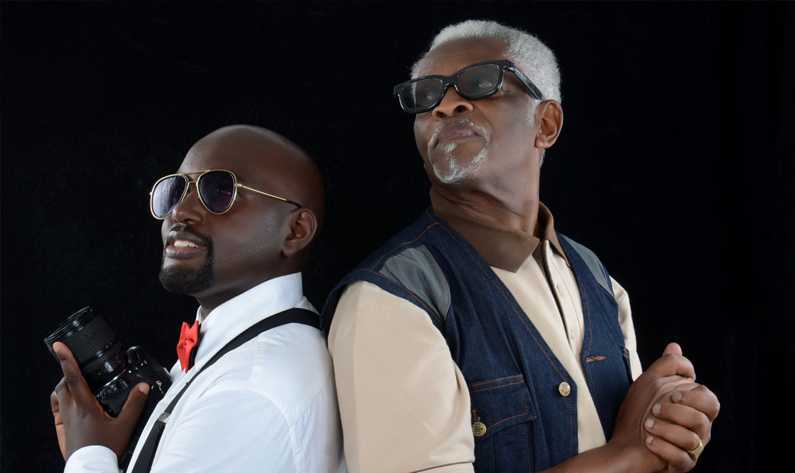

Kenny being a dedicated photographer to his work, he has been able to
win several awards. This is Tasha. it is Kenny's first profesional
photo that he took in the year 2017. The client was sure to head home
satisfied the good work.

For such great pics like this of Tasha, you are required to book
for a chance to be scheduled. upon complition of booking, you will end up
leaving your conduct information. Kenny or his assistants will get back to you
so that necessary arrengements to vist the shoot site can be made.
Clients always have the priviledge of choosing sites for their photo-shootings.
this is Mzae and and his son. the photo shooting was done in our studio. their faces
for sure can tell how great it must have been to be clients of Kenny.
Starting out in 2010 as an online community aimed at educating and inspiring photographers,
KennyShoot has grown since then into a massive photography resource that's packed with latest
equipments and cameras.There's plenty of inspiration to be had from its gallery of users' photos,
as well as its Photo of the Day competition, and its online groups are the ideal place to talk
photography, share your work and get feedback from the community.
| Service | Prices |
|---|---|
| photo-shoot | ksh. 100 |
| photo Editing | ksh 200 |
| Photo shop | ksh.300 |
| Camera Holding | ksh. 500 |
| Event Photographing | ksh. 10,000 |
| Camera lease | ksh. 1500 |